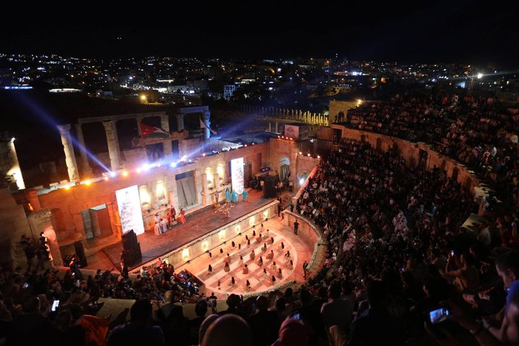
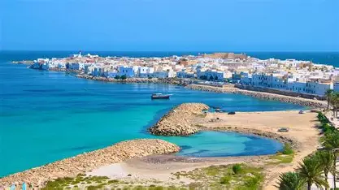
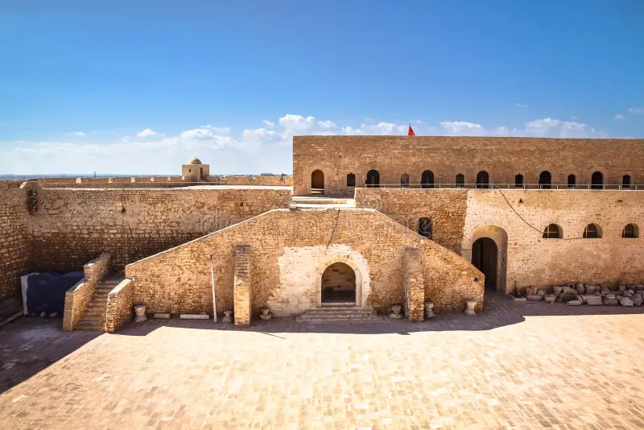

Standing as a colossal testament to Roman engineering, the Amphitheatre of El Jem is the third-largest Roman arena in the world and the most impressive in Africa. Built in the 3rd century AD, this UNESCO World Heritage site once echoed with the roars of 35,000 spectators and the clashing of gladiators. Unlike many other ancient ruins, El Jem is exceptionally well-preserved, allowing visitors to walk through the vaulted galleries and descend into the underground tunnels where animals and fighters once awaited their fate. It is not just a monument; it is a time machine that takes you back to the height of the Roman Empire.



Every summer, the ancient stones of the amphitheater come to life in a breathtaking cultural experience. The International Festival of Symphonic Music transforms this historic arena into a world-class stage. Under the soft glow of thousands of hand-lit candles, renowned orchestras from across the globe perform timeless masterpieces. The natural acoustics of the Roman walls create a sound quality that is unparalleled, blending the grandeur of classical music with the soul of Mediterranean history. It is a magical night where the glory of the past meets the artistry of the present, making it a "must-attend" event for any traveler.


Standing at the entrance of Mahdia’s Medina, the Skifa El Kahla (The Dark Gate) is more than just a stone arch—it is a journey through time. This massive, 50-meter-long fortified tunnel was built in the 10th century to protect the city from the sea and invaders. As you walk through its cool, dark passage, the sounds of the modern world fade away, replaced by the vibrant colors and scents of the old town. It is the silent guardian of Mahdia, a masterpiece of military architecture that has stood firm for over a thousand years. Once you pass through, you aren’t just in a new street; you are in the heart of history.



Beyond the narrow streets of the Medina lies the Old Fatimid Port—a place of pure silence and breathtaking beauty. Carved directly into the rocky coastline over a thousand years ago, this ancient harbor was once the naval heart of a great empire. Today, it is a peaceful sanctuary where small, colorful fishing boats bob in turquoise waters. Walking along the rocky edge, you can still see the remains of the massive sea walls that once protected the city. It is the perfect spot for those who want to escape the crowds, breathe the salty air, and watch a sunset that feels as ancient as the stones beneath your feet.



Standing proudly at the highest point of the peninsula, Borj El Kebir is a masterpiece of Ottoman and Fatimid military architecture. Built in the 16th century on the ruins of an ancient Fatimid palace, this massive fortress was designed to protect the city from the greatest navies of the Mediterranean. As you walk through its thick stone walls and arched gateways, you feel the weight of centuries of history. But the true magic happens when you reach the top of the ramparts: from there, you are treated to a limitless 360-degree view of the turquoise sea, the old Fatimid port, and the iconic white cemetery. It is the best place in Mahdia to feel the sea breeze and realize why this city was once the capital of an empire..